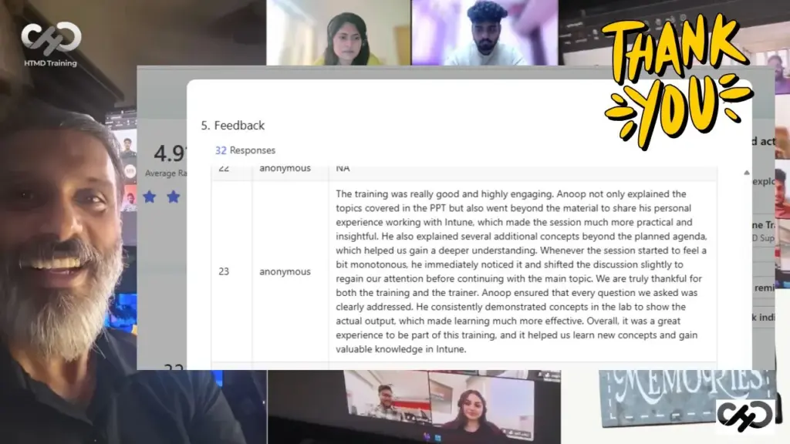
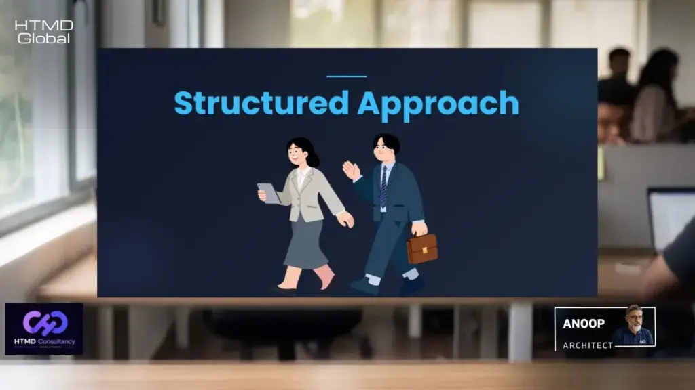
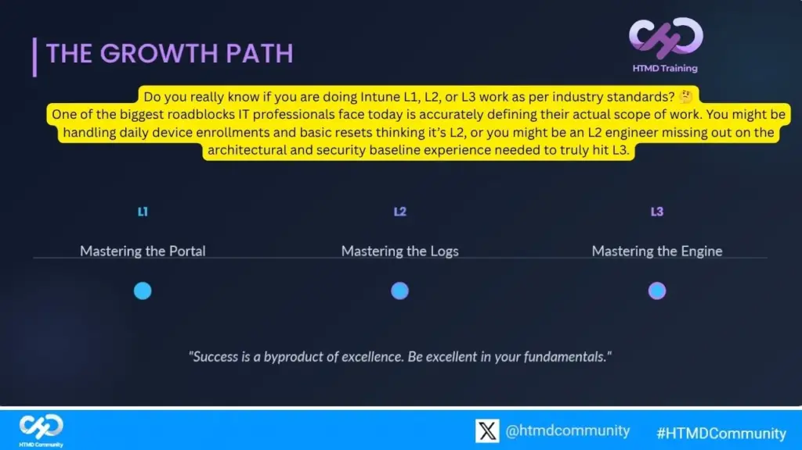
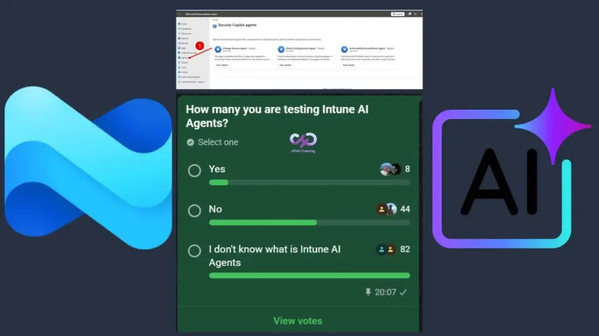
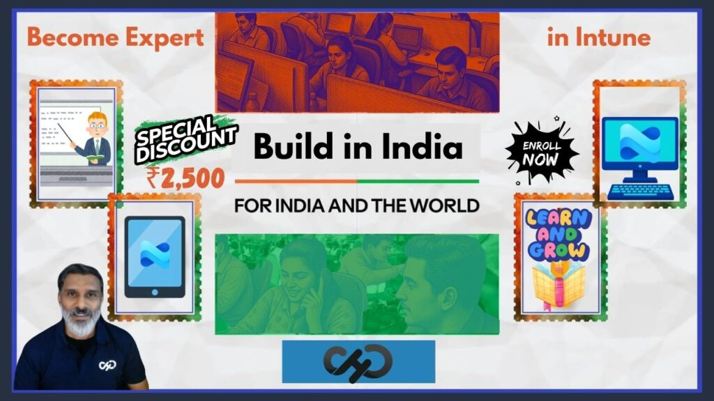

Key Highlights of Intune Training Program
- Self-Paced and Live Classes model
- Learn from Anywhere | Anytime
- Live Chat | Voice Note
- All Support You Need to Excel in your Intune Career
- Feedback from Students
- Demo Classes
- AI Impact on Intune Jobs
I’ve designed Premium Training Program for Microsoft Intune AI Advanced Technologies and Troubleshooting in a unique method which is proven and helped others in my more than 2 decades of experience in this field. All my students will be able to excel in Intune technologies if they stick to the ground rule which I explained in the coaching and mentoring program.

Premium Training Program for Microsoft Intune AI Advanced Technologies
I don’t personally believe in just few live sessions and live training which span across few weekends or couple of weeks. Over here I’m talking about a coaching and mentorship program where I’ll be together with students for 2 years.
Students can ask questions with the chat option available in the training platform. I have also built iOS (org code = bhgmkw) and Android Applications for this advanced Intune coaching program.
Structure of the Program
All Intune related to the concepts explained in the training course. LAB Assessments are very important for learning. Without completing the LAB assessments, any students won’t be able to become expert in the Intune technologies.
So, this program is best of both the worlds such as self-paced and live classes I also have monthly live session along with mentorship for the students.

Industry Specialists: Get training from experts from Microsoft Most Valuable Professionals with more than 25+ years of experience in this industry.
80% Practical Training: Build a portfolio while learning Modern Workplace Technologies such as Intune, Entra ID through live examples.
Chat and Voice Support: Unique opportunity to clear your doubts about the classes explained in the coaching classes from the expert trainers.
Self Paced: This approach helps you to reach the goals at your own pace.
Real-World: Real-world topics are covered to get your jobs done.
Monthly Live Classes: To get updated on the latest/important updates | Q&A.
Intune Growth Path
Do you really know if you are doing Intune L1, L2, or L3 work as per industry standards (YouTube Video)? One of the biggest roadblocks IT professionals face today is accurately defining their actual scope of work. You might be handling daily device enrollments and basic resets thinking it’s L2, or you might be an L2 engineer missing out on the architectural and security baseline experience needed to truly hit L3.

Master Intune
Most of the Intune students don’t understand the fact that they should concentrate on one part of Intune tech at one time. It’s not a good practice to master all the components and platforms such as Windows, iOS, Android, and macOS at the same time.
Intune is vast and it’s not very practical to master everything at a time. My advice would be to concentrate on one of the topics and let’s say Windows. Master the Windows and understand how Intune works for Windows behind the scenes and understand the new architecture of Windows support with Intune such as MMP-C, etc.
Why Windows as starting point? Because Windows is easy build devices in the LAB. Once you are master in Windows, then it would be easy for you to master other platform such as mac because you already know the backend architecture of Intune.
AI and Intune Impact
With SCCM we started learning PowerShell and many of us become expert in scripting as well. For upskilling to Intune and AI related topics will happen eventually once you are in the correct profile and job role.
With in Intune, you see there are AI agents in Intune, and we don’t how that works and what is the architecture of it? I have published a YouTube video about the architecture of AI and Intune copilot and how that works.
When many organizations start adopting AI agents in Intune, we will learn AI agents‘ architecture because that is needed for design scenarios and troubleshooting scenarios in Intune at later point of time!! So, let’s hold your horses for now!

Intune Training by Anoop Feedback
I have shared some of the feedback from the program and as Intune trainer in this section of the post. I hope this helps to understand my training methods and strategy.
Feedback 1: Abnish Kumar
| I would like to express my sincere appreciation for the excellent training session. you demonstrated exceptional knowledge of the subject matter and explained complex concepts in a clear and structured manner. |
Feedback 2: Saridha M
| I just wanted to say a big thank you for the Intune training session. It was really well organized and easy to follow. Anoop you’re the best trainer. I’ve ever had, there’s no one like you! You’re very good at teaching and keeps the session highly interactive, which made learning enjoyable and effective. You explained every topic so clearly and made even the complex parts simple to understand. I liked how you used real-world examples and kept the session interactive and it made learning much more engaging and practical. Your approach gave me a lot of confidence in working with Intune. The training was extremely helpful and exceeded my expectations. Thank you for your time, effort, and the way you made the whole experience enjoyable. It was a pleasure learning from you!! |
Feedback 3: Nakshathra Premarajan
| The training was really good and highly engaging. Anoop not only explained the topics covered in the PPT but also went beyond the material to share his personal experience working with Intune, which made the session much more practical and insightful. He also explained several additional concepts beyond the planned agenda, which helped us gain a deeper understanding. Whenever the session started to feel a bit monotonous, he immediately noticed it and shifted the discussion slightly to regain our attention before continuing with the main topic. We are truly thankful for both the training and the trainer. Anoop ensured that every question we asked was clearly addressed. He consistently demonstrated concepts in the lab to show the actual output, which made learning much more effective. Overall, it was a great experience to be part of this training, and it helped us learn new concepts and gain valuable knowledge in Intune. |
Offer and Discounts
I also offer and share discount on courses via my LinkedIn profile. Please feel free to connect with me and have more detailed discussion on this training/coaching program.

I’m also available via WhatsApp chat and voice note to answer any questions related to the Premium Training Program for Microsoft Intune AI Advanced Technologies and Troubleshooting. You can reach out to me via Intune Training WhatsApp Chat Support.
Demo Classes
You can go through the demo classes from the training platform itself. Please can you refer to the following link to get more details on demo classes of Intune.
Intune Expert Coaching by Anoop Demo Classes.
Author
Anoop C Nair is Workplace Technology solution architect with 25+ years of experience in global enterprise organizations such as JP Morgan, Capgemini, etc. He is Microsoft Certified Trainer. Microsoft MVP from 2015 onwards for consecutive 11 years! He also conducts Intune and modern workplace tech training for enterprise organizations. He is Blogger, Speaker, and Founder of HTMD Community and HTMD Conference. His focus is on Device Management technologies such as Intune, Windows, Cloud PC. He writes about technologies like Intune, SCCM, Windows, Cloud PC, Windows, Entra, Microsoft Security.